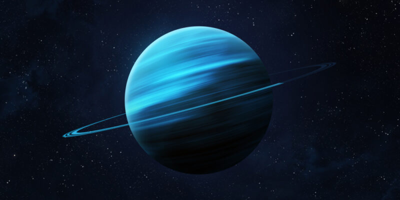

|  |
|
gigante de hielo, el séptimo planeta desde el Sol, notable por su inclinación lateral que lo hace rotar casi como una pelota rodando, su color azul verdoso debido al metano en su atmósfera y el hecho de ser el planeta más frío del Sistema Solar. |